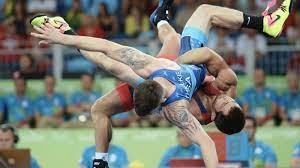

What is Free-style?
Freestyle wrestling is a style of wrestling originated from Great Britain and the United States. Along with Greco-Roman, it is one of the two styles of wrestling contested in the Olympic Games. American high school and men's college wrestling are conducted under different rules and termed scholastic and collegiate wrestling. American collegiate women's wrestling is conducted under freestyle rules.[1]
Freestyle wrestling, like collegiate wrestling, has its origins in catch-as-catch-can wrestling. In both styles the ultimate goal is to throw and pin the opponent to the mat, which results in an immediate win. Unlike Greco-Roman, freestyle and collegiate wrestling allow the use of the wrestler's or the opponent's legs in offense and defense. Freestyle wrestling brings together traditional wrestling, judo, and sambo techniques.[citation needed]
According to wrestling's world governing body, the United World Wrestling (UWW), freestyle wrestling is one of the six main forms of amateur competitive wrestling practiced around the globe today. The other five forms are Greco-Roman wrestling, grappling/submission wrestling, beach wrestling, pankration athlima, alysh/belt wrestling and traditional/folk wrestling.[2] In 2013, the Executive Board of the International Olympic Committee (IOC) recommended dropping wrestling as a sport from the 2020 Olympic Games, but the decision was later reversed by the International Olympic Committee .
